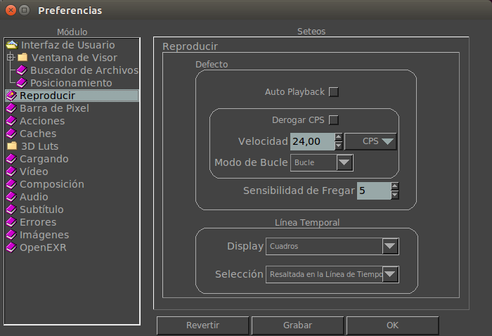

Preferencias de Reproducción
La ficha de preferencias de reproducción te permite modificar como mrViewer reproduce y usa la barra de tiempo al comenzar la sesión.

Auto Reproducción
Cuando esta opción esta activada, mrViewer, tras cargar los archivos, comenzara a reproducirlos.
Defecto
Aquí puede cambiar la velocidad por defecto (CPS) de la linea de tiempo asi como su modo de loop.